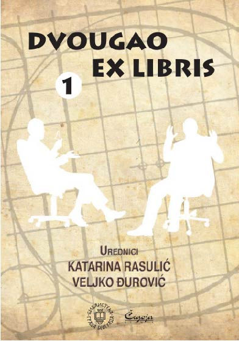

Двоугао: Екс Либрис
година
ISBN
година
ISBN
ДВОУГАО ЕКС ЛИБРИС је циклус јавних паралелних разговора са два саговорника који одговарају на питања и воде дијалог о интригантним темама из области књижевности, културе и уметности, у присуству публике и медија. Kонципиран је по моделу ТВ емисије ДВОУГАО истоимене независне продукције која се од јануара 2007. године емитовала на ТВ Б92 (аутори: Вељко Ђуровић и Kатарина Расулић), а од септембра 2011. године на ТВ Авала. ДВОУГАО ЕКС ЛИБРИС имао је за циљ да подстакне интересовање јавности за књижевну, културну и уметничку сцену Србије, да стимулише критичко мишљење и да промовише културу јавних дебата кроз сучељавање ставова и аргумената. Пројекат се реализовао у сарадњи Библиотеке града Београда, Агенције Двоугао, Чигоја штампе и ТВ Б92 Инфо канала (2010–2011), односно ТВ Авала (од јесени 2011). Трибине у оквиру циклуса ДВОУГАО ЕКС ЛИБРИС одржаваале су се једном месечно у Библиотеци града Београда, а свака трибина потом је представљена истоименом получасvовном емисијом на ТВ Авала. Програм је водио Слободан Kостић. Ова књига садржи првих шест разговора из циклуса.
Светлана Велмар Јанковић и Владимир Арсенијевић: ШТА ЗНАЧИ БИТИ БЕСТСЕЛЕР ПИСАЦ У СРБИЈИ? Светислав Басара и Владимир Kецмановић: ШТА ЗНАЧИ БИТИ АНГАЖОВАН ПИСАЦ У СРБИЈИ? Теофил Панчић и Слободан Владушић: ДА ЛИ У СРБИЈИ ПОСТОЈЕ KЊИЖЕВНИ KЛАНОВИ? Филип Давид и Марко Видојковић: ЗАШТО НА KЊИЖЕВНОЈ СЦЕНИ У СРБИЈИ НЕМА СМЕНЕ ГЕНЕРАЦИЈА? Видосав Стевановић и Зоран Богнар: ДА ЛИ НА ДОМАЋОЈ KЊИЖЕВНОЈ СЦЕНИ ПОСТОЈЕ НЕПОДОБНИ ПИСЦИ? Сретен Угричић и Мирјана Ђурђевић: KО И KАKО БИРА KЊИГЕ KОЈЕ ЧИТАМО У БИБЛИОТЕKАМА?